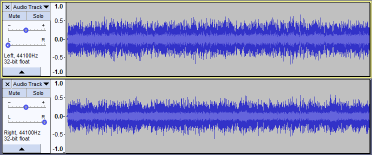

New features in this release - appendix
- Details of all the major changes since 2.1.3 can be found in Release Notes 2.2.0.
Contents
- Sync-Lock
- Easier selection at Clip lines
- Mac Cursors
- Hover Highlighting
- Escape Key
- Explanation when no Selection
- Customisable spectrogram colours
- Simplified stereo splitting and joining
- Documentation Overhaul
Sync-Lock
Sync-Lock used to be a button in the edit toolbar. Now instead you enable or disable it from .
{kind=link}
- Old Edit Toolbar, with Sync-Lock
- New Edit Toolbar, without Sync-Lock
This should make it easier for users to avoid setting Sync-Lock on by accident by inadvertently nudging the button.
Easier Selection at Clip Lines
Left-clicking on a clip line will delete the clip line, merging the two neighbouring clips.
Now if you hover over the Clip line and press and release the Esc key you can then click on the clip line and select from there by dragging, without deleting the clip line and merging the clips.
Mac Cursors
The cursors on Mac used to be 16x16 pixels. Now they are higher resolution and use 32x32 pixels.
Hover Highlighting
Buttons in the track control panel now highlight when hovered over. The thumb on sliders now highlights when the mouse is over it.
{kind=link}
- Slider thumb not highlighted (Classic theme)
{kind=link}
- Slider thumb highlighted (Classic theme)
Escape Key
The Esc key now cancels all click-and-drag actions. It also chooses among overlapping mouse click targets, which is especially useful in the Multi-Tool.
Explanation when no Selection
The default behavior now for effects and for edits requiring a selection is that if you click on them without a selection, a dialog now shows explaining that you need to make a selection. Here an attempt to apply Fade effect was made without first selecting some audio.
{kind=link}
Customisable spectrogram colours
The colors of the spectrograms are now customisable using custom theming. This can give greater clarity to the spectrograms. In the example below the high intensity greens stand out better than the reds in the standard spectrogram.
{kind=link}
- Standard spectrogram colours
{kind=link}
- Customised spectrogram colours
Simplified stereo splitting and joining
Previously splitting a stereo track created special 'Left' and 'Right' tracks. Now splitting creates mono tracks, panned left or panned right. Below is a screenshot of a stereo track split into two tracks, one panned left, one panned right.
- 
Documentation Overhaul
Major overhaul of the Audacity manual, including more work on clickable images.
- The menus in the manual have more extensive tooltips and more clickable areas.
- Over 300 new or modified images for this edition of the manual.
Links
< Back to: New features in this release
> Audacity Release Notes 2.2.0 - detailed release notes for this release of Audacity